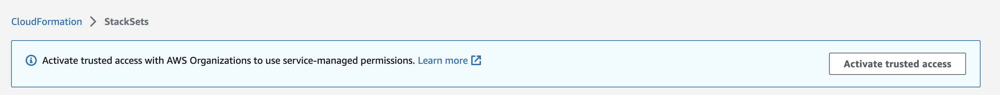

Activar el acceso de confianza con AWS Organizations
Para configurar los permisos necesarios para crear un conjunto de pilas con permisos auto administrados, consulte Concesión de permisos autoadministrados.
Antes de crear un conjunto de pilas con permisos administrados por servicios, primero debe completar las siguientes tareas:
-
Habilite todas las características en AWS Organizations. Con solo las características de facturación consolidadas habilitadas, no puede crear un conjunto de pilas con permisos administrados por servicios.
-
Active el acceso de confianza con AWS Organizations. Una vez activado el acceso de confianza, StackSets crea los roles de IAM necesarios en la cuenta de administración de la organización y en las cuentas de destino (miembro) cuando se crean conjuntos de pilas con permisos administrados por el servicio.
nota
El rol vinculado a servicios de IAM creado en la cuenta de administración tiene el sufijo
CloudFormationStackSetsOrgAdmin. Puede modificar o eliminar este rol solo si el acceso de confianza con AWS Organizations está desactivado. El rol vinculado a servicios de IAM creado en cada cuenta de destino tiene el sufijoCloudFormationStackSetsOrgMember. Puede modificar o eliminar este rol solo si el acceso de confianza con AWS Organizations está desactivado o si la cuenta se ha eliminado de la organización o unidad organizativa (OU) de destino.
Para obtener más información sobre la administración del acceso de confianza con API, consulte:
Solo un administrador de la cuenta de administración tiene permisos para activar el acceso de confianza. El usuario administrador es un usuario de IAM con permisos completos a su cuenta de AWS. Para obtener más información, consulte Prácticas recomendadas de IAM y Creación del primer IAM grupo y usuario de administrador en el Guía del usuario de IAM.
Con el acceso de confianza activado, la cuenta de administración y las cuentas de administrador delegado pueden crear y administrar conjuntos de pilas administradas por servicios para su organización.
Para activar el acceso de confianza en el asistente Crear StackSet
Consulte Creación de un conjunto de pilas con permisos administrados por servicios.
Para activar el acceso de confianza mediante la consola de AWS CloudFormation
-
Inicie sesión en AWS como administrador de la cuenta de gestión y abra la AWS CloudFormationconsola en https://console.aws.amazon.com/
. -
En el panel de navegación, seleccione StackSets (Conjuntos de pilas). Si el acceso de confianza está desactivado, aparece un banner que le pide que active el acceso de confianza.
 -
Seleccione Activar el acceso de confianza.
El acceso de confianza se activa correctamente cuando aparece el siguiente banner.

nota
Activar el acceso a organizaciones es lo mismo que habilitar el acceso a organizaciones y desactivar el acceso a organizaciones es lo mismo que deshabilitar el acceso a organizaciones. Estos términos se actualizaron en función de las directrices de marketing.
Para activar el acceso de confianza en la página Acceso de confianza para los servicios de AWS de la consola de AWS Organizations
Consulte Conceptos de AWS CloudFormation StackSets y AWS Organizations en la Guía del usuario de AWS Organizations.
Para desactivar el acceso de confianza
Consulte Conceptos de StackSets de AWS CloudFormation y AWS Organizations en la Guía del usuario de AWS Organizations.
Antes de desactivar el acceso de confianza con AWS Organizations, debe anular el registro de todos los administradores delegados. Para obtener más información, consulte Registro de un administrador delegado.